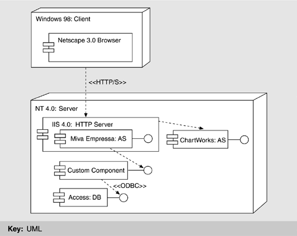
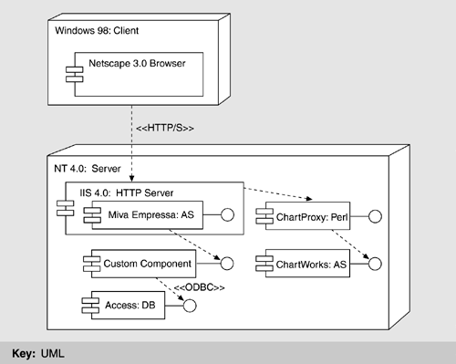
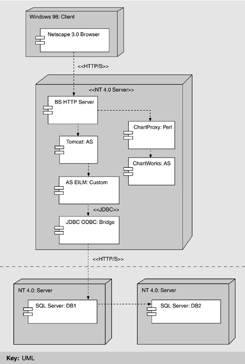
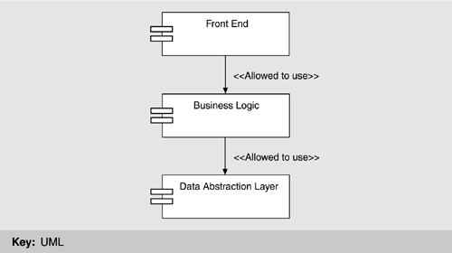

| [ Team LiB ] |
|
18.4 ASEILM ExampleOur example centers around a Web-based information system developed at the Software Engineering Institute (SEI) for automating administrative interactions between SEI and its transition partners. The Automated SEI Licensee Management (ASEILM) system was created with the following objectives:
ASEILM must support the following multiple user types, each with varying authorization to perform system functions:
Based on an initial analysis, the developers were able to generate a list of system requirements, many of which mapped directly to the qualities of the system being developed (see Table 18.1). The normal give and take of requirements negotiation is different with off-the-shelf components. You may expect both more and less from them—more in the sense that more functionality is provided by these components "for free," less in the sense that this functionality may not precisely meet your organization's needs, and changing it may be difficult or impossible. MIVA EMPRESSA ENSEMBLEBuilding systems from off-the-shelf components is viewed by management as a simplification of the development process, requiring less experienced programmers than standard custom development. In fact, the opposite is almost always true: Development is typically more difficult, at least new development, with a new set of components. Extensive experience is often necessary to identify components that can be used to achieve a design; to understand compatibilities between these components and others; and to determine the tradeoffs between requirements, the use of specific components, and the overall costs. In the absence of this experience, a time-consuming search and qualification process must be undertaken. In our example, the development team already had some familiarity with the Miva Empressa application server and preferred to use it as part of their initial hypothesis. Miva Empressa is an extension of Microsoft's Internet Information Server (IIS) that runs XML-based Miva Script. Miva Script applications running under Miva Empressa execute within IIS and can carry out complex computations, including database access. They are embodied in the "custom component" shown in Figure 18.2. Note that this was the only component developed from scratch by the ASEILM team. Figure 18.2. Miva Empressa ensemble The ASEILM ensemble used several off-the-shelf components in addition to the Miva Empressa application server:
A client could be represented by any number of potential platforms and browsers. The initial ensemble included the Netscape 3.0 browser and the Windows 98 operating system. Netscape 3.0 represented an older browser version, with limited capabilities, but it was used by many lead assessors (one kind of ASEILM user). Windows 98 was used extensively in the ASEILM user base. The definition of an ensemble is a pre-condition to the model-process work flow. This ensemble then, served as the basis for the initial model solution illustrated in Figure 18.2. In the following sections, we illustrate the model problem process using as the primary hypothesis that the Miva Empressa ensemble would be a satisfactory solution. Step 1: Identify a Design QuestionThe first step in the model problem process is to formulate one or more hypotheses, as use cases or scenarios, that test the design to see if the ensemble is a feasible solution. The following hypotheses were derived from the system quality attributes given in Table 18.1:
Hypothesis 1 was established primarily to test the functionality of the system and the ability to integrate the required components. Hypothesis 2 was established to prove the feasibility of meeting one of the stated security quality objectives for ASEILM: providing secure transfer of data over the Internet. Proving both hypotheses does not, in this case, prove the feasibility of the overall ensemble, but it does allow progress toward a demonstration of feasibility by evaluating its additional required qualities. At the same time, evaluation of these hypotheses allows increased understanding of the components and their interactions within the ensemble. Step 2: Define the Starting Evaluation CriteriaEvaluation criteria are necessary to determine if the model solution supports or disproves the initial hypotheses.
It is important that the success of the evaluation criteria be verifiable. For example, in the case of criterion 2, the security of data transfer can usually be established by observing the presence of the lock icon in the Web browser. Proper testing procedures must be used, however, to ensure that data being displayed in the Web browser actually originated in the database and was not "cached" somewhere along the route. Step 3: Identify Implementation ConstraintsThe constraints define inflexible elements in the design context. They make sure that the design solution is valid for the system under development. In this example, there were no implementation constraints other than those already identified. Step 4: Produce a Model SolutionAfter the model problem had been fully defined, the development team began implementing the model solution—that is, the minimal application necessary to support or contradict the hypothesis. During implementation, it is permissible and beneficial to identify additional criteria that must be satisfied to demonstrate the feasibility of the ensemble. In the model solution for this example, ChartWorks is used to graph revenue, attendance, and other related information. The developers first attempted a straightforward solution that had the browser sending IIS an HTML statement to be forwarded to ChartWorks. The statement contained a query that identified the data to be graphed. They discovered two problems, however: coupling the labels of the graph to the data in it and maintaining a secure connection. Coupling labels and dataChartWorks uses the chart description language (CDL) to describe the chart, including how information would be extracted from the database (in this case, Access) and integrated into it. In this ensemble, chart labels and chart data needed to be extracted from the Access database, which required two different CDL statements. Unfortunately, CDL does not provide any mechanisms that could be used to pair the information generated as a result of different statements. This prevented its use to query the database directly. Instead, Miva was used to query the Access database and to create a text file that combined the label and the data information. A CDL statement was created to retrieve data from this file instead of communicating directly with the database. Although this approach worked, it introduced significant complexity. For example, it was necessary to keep track of multiple intermediate files for different user sessions and to make sure these were not confused. Secure communicationThe HTML statement processed by IIS specifies the retrieval of an image generated by ChartWorks. Thus, IIS is constrained to use the ChartWorks APIs. ChartWorks provides an API for HTTP but not for HTTPS. This prevents a secure connection from being established between ChartWorks and the browser. To work around this problem, the team experimented with removing the HTTPS connection between IIS and ChartWorks. Since they are located on the same processor, security is enforced through access to the processor, not through the communication protocol. Unfortunately, this did not work either because there were both secure and insecure elements in a single Web page and the browser either did not allow the display of the page or informed the user of an insecure portion of a transmission. Neither option was acceptable. To repair these problems, the team created a perl proxy server that sits between IIS and ChartWorks. They were then able to establish a secure connection between IIS and the proxy server so that the proxy server could communicate with ChartWorks using an HTTP connection. This solution is illustrated in Figure 18.3. The HTML statement was modified to invoke the perl proxy server. Figure 18.3. Introduction of Proxy server Step 5: Identify Ending Evaluation CriteriaAdditional evaluation criteria were identified during implementation of the Miva model solution; in particular, new quality attribute requirements were identified. During implementation, it was observed that the graphical presentation elements of the solution were highly intertwined with back-end logic. This made it difficult for graphic designers to help develop the system's user interface because they were unfamiliar with general-purpose programming. The following evaluation criterion thus joined the model problem:
It was also discovered that the Access database did not support remote connections. Although communication with the database from the Miva application server through the ODBC interface was possible, the database had to be co-located on the same platform as the IIS server. Since IIS had to be located outside the SEI firewall to be available to the user community, the database had to be outside as well. This constraint was unacceptable, leading to the addition of a fourth criterion:
Step 6: Evaluate the Model SolutionOnce the model solution had been implemented, and the additional evaluation criteria identified, the architect could evaluate the solution against the criteria. Through the use of repair mechanisms, both of the initial criteria could have been satisfied. Not surprisingly, however, neither of the new criteria could have been satisfied. Because there were no obvious remedies for either problem, this ensemble was judged to be infeasible. JAVA SERVLET ENSEMBLEIn addition to the primary ensemble based on Miva Empressa, an alternative, based on Java servlets, was identified. Miva Empressa was selected as the primary ensemble to investigate because of the existence of component expertise within the ASEILM development team; therefore, it received the most project resources. However, a limited effort was also devoted to evaluating the Java servlet ensemble. This exploration was the second time through the model problem work flow, so three steps could be saved:
The new evaluation was able to start with step 4, which involves building a model solution, as pictured in Figure 18.4. Figure 18.4. JavaServer Pages ensemble This solution was able to satisfy the first two criteria using the same processes implemented in the Miva Empressa ensemble. As ChartWorks was a part of the Java ensemble, the developers continued using adapters to repair the HTTP/S mismatch. The use of Java servlets allows separation of the presentation aspects of the system from the business and database logic. The presentation logic was restricted to HTML pages while the business and database logic was moved to servlets and Java beans executing in the Tomcat application server, satisfying criterion 3. Also, by replacing the Access database with SQL Server, the developers were able to use a remote connection to host the database behind the firewall, satisfying criterion 4. In the process of developing a model solution for the new ensemble, the following four things happened:
We now discuss the last three items. SecurityIn addition to securing the transfer of data over the wire, the authentication model needed revisiting. Users were authenticated by placing a unique identifier, in the form of a cookie, on the client machine and mapping it to a session. The developers learned that, if the client machine was compromised, the user could be spoofed and the system compromised. To protect against this, the IP address of the machine that logged on was mapped to a unique identifier and checked with each subsequent request. An additional technique, called "cross-side scripting," is sometimes used by hackers. In this case, the Web form is saved on the hacker's machine and is altered in some malicious way. The form is then submitted, potentially causing the server to crash and displaying code or some other unintended information to the client machine. ASEILM's solution was to define exceptions to guard against this kind of attack. Additional requirementsDuring development, another group became aware of ASEILM and wished to integrate their data with its data. It was not immediately clear what data needed to be integrated or for what purpose. Nor was the structure of the data to be integrated clear. During investigation, it became apparent that many people kept their own copy of data that pertained in some way to the data that ASEILM was meant to track. To minimize the effect on ASEILM of supporting additional data types, the team needed to separate the data abstraction layer in the custom components from the business logic. This would allow the system to function without knowledge of the source or structure of the data store(s). The layers of the custom component are shown in Figure 18.5. Figure 18.5. Layers of custom component ConcurrencyWhile the Java ensemble satisfied criteria that the Miva ensemble was unable to, it also introduced new concerns about concurrency management. Through the development of the model solution the team realized that (unlike the Miva ensemble) the Java ensemble did not manage concurrency. Tomcat documentation did not discuss concurrency. To determine whether this was in fact a concern, the team had to discover the thread model for this ensemble. In particular, they had to learn how IIS and Tomcat related to each other and what effect this would have on the system. They analyzed the thread model and hypothesized that every user login created a distinct thread. This suggested three cases:
The team evaluated this solution against the ending evaluation criteria, which were unchanged from the initial experiment with Miva. The Java servlet ensemble met the criteria, and implementation was continued. The Java servlet ensemble solution turned out to be suitable for the project's needs, and the ASEILM system was fielded early in 2002. It is still too early to know if the assumptions about usage patterns with respect to concurrency are correct, but early indications are positive. Note, however, that this solution is not expected to scale well. |
| [ Team LiB ] |
|